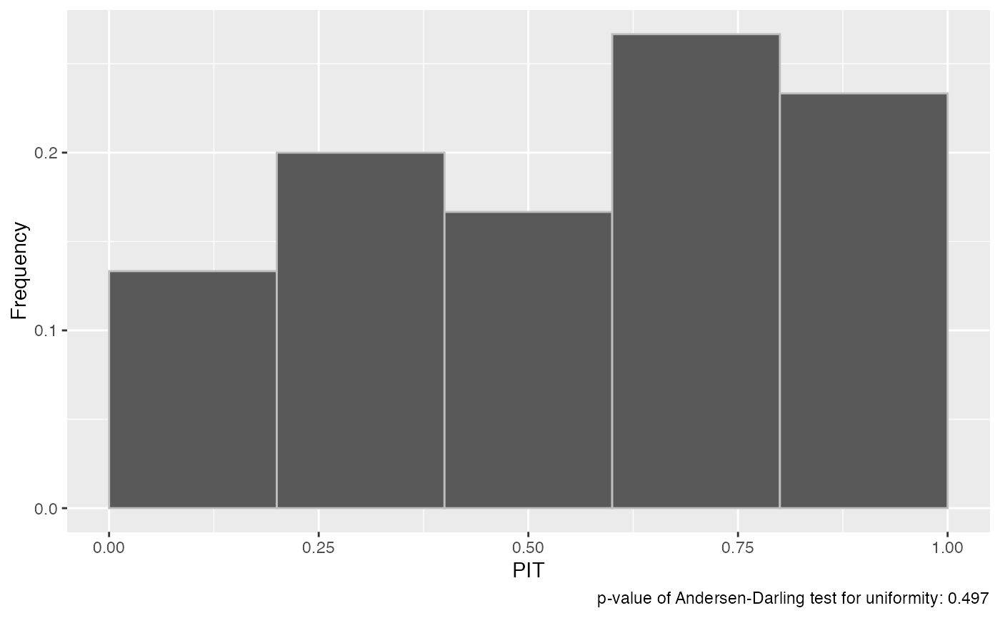
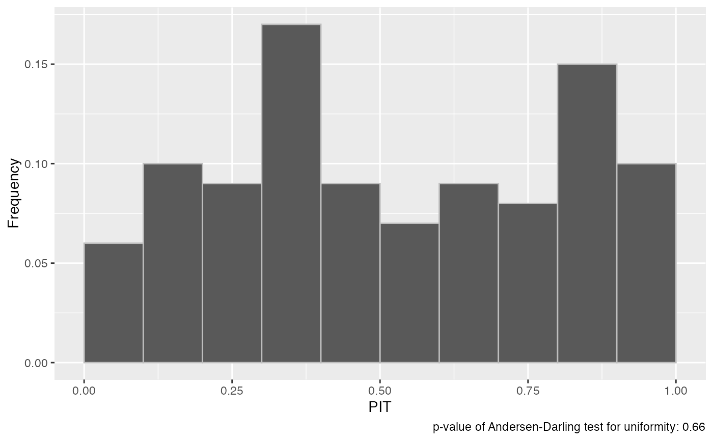

Uses a Probability Integral Transformation (PIT) (or a randomised PIT for integer forecasts) to assess the calibration of predictive Monte Carlo samples. Returns a p-values resulting from an Anderson-Darling test for uniformity of the (randomised) PIT as well as a PIT histogram if specified.
pit(
true_values,
predictions,
plot = TRUE,
full_output = FALSE,
n_replicates = 50,
num_bins = NULL,
verbose = FALSE
)| true_values | A vector with the true observed values of size n |
|---|---|
| predictions | nxN matrix of predictive samples, n (number of rows) being the number of data points and N (number of columns) the number of Monte Carlo samples |
| plot | logical. If TRUE, a histogram of the PIT values will be returned as well |
| full_output | return all individual p_values and computed u_t values for the randomised PIT. Usually not needed. |
| n_replicates | the number of tests to perform, each time re-randomising the PIT |
| num_bins | the number of bins in the PIT histogram (if plot == TRUE) If not given, the square root of n will be used |
| verbose | if TRUE (default is FALSE) more error messages are printed. Usually, this should not be needed, but may help with debugging. |
a list with the following components:
p_value: p-value of the Anderson-Darling test on the
PIT values. In case of integer forecasts, this will be the mean p_value
from the `n_replicates` replicates
sd: standard deviation of the p_value returned. In case of
continuous forecasts, this will be NA as there is only one p_value returned.
hist_PIT a plot object with the PIT histogram. Only returned
if plot == TRUE. Call
plot(PIT(...)$hist_PIT) to display the histogram.
p_values: all p_values generated from the Anderson-Darling tests
on the (randomised) PIT. Only returned if full_output = TRUE
u: the u_t values internally computed. Only returned if
full_output = TRUE
Calibration or reliability of forecasts is the ability of a model to correctly identify its own uncertainty in making predictions. In a model with perfect calibration, the observed data at each time point look as if they came from the predictive probability distribution at that time.
Equivalently, one can inspect the probability integral transform of the predictive distribution at time t,
$$ u_t = F_t (x_t) $$
where \(x_t\) is the observed data point at time \(t in t_1, …, t_n\), n being the number of forecasts, and $F_t$ is the (continuous) predictive cumulative probability distribution at time t. If the true probability distribution of outcomes at time t is \(G_t\) then the forecasts eqnF_t are said to be ideal if eqnF_t = G_t at all times t. In that case, the probabilities ut are distributed uniformly.
In the case of discrete outcomes such as incidence counts, the PIT is no longer uniform even when forecasts are ideal. In that case a randomised PIT can be used instead: $$ u_t = P_t(k_t) + v * (P_t(k_t) - P_t(k_t - 1) ) $$
where \(k_t\) is the observed count, \(P_t(x)\) is the predictive cumulative probability of observing incidence k at time t, eqnP_t (-1) = 0 by definition and v is standard uniform and independent of k. If \(P_t\) is the true cumulative probability distribution, then \(u_t\) is standard uniform.
The function checks whether integer or continuous forecasts were provided. It then applies the (randomised) probability integral and tests the values \(u_t\) for uniformity using the Anderson-Darling test.
As a rule of thumb, there is no evidence to suggest a forecasting model is miscalibrated if the p-value found was greater than a threshold of p >= 0.1, some evidence that it was miscalibrated if 0.01 < p < 0.1, and good evidence that it was miscalibrated if p <= 0.01. However, the AD-p-values may be overly strict and there actual usefulness may be questionable. In this context it should be noted, though, that uniformity of the PIT is a necessary but not sufficient condition of calibration.
Sebastian Funk, Anton Camacho, Adam J. Kucharski, Rachel Lowe, Rosalind M. Eggo, W. John Edmunds (2019) Assessing the performance of real-time epidemic forecasts: A case study of Ebola in the Western Area region of Sierra Leone, 2014-15, <doi:10.1371/journal.pcbi.1006785>
## continuous predictions
true_values <- rnorm(30, mean = 1:30)
predictions <- replicate(200, rnorm(n = 30, mean = 1:30))
pit(true_values, predictions)
#> $p_value
#> [1] 0.691468
#>
#> $sd
#> [1] NA
#>
#> $hist_PIT

#>
## integer predictions
true_values <- rpois(100, lambda = 1:100)
predictions <- replicate(5000, rpois(n = 100, lambda = 1:100))
pit(true_values, predictions, n_replicates = 5)
#> $p_value
#> [1] 0.6599772
#>
#> $sd
#> [1] 0.130274
#>
#> $hist_PIT

#>